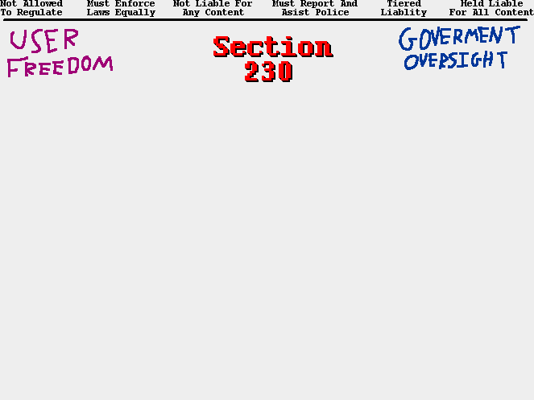

Is Section 230 Good

But we can see this actually 2d plane of options, where right now  is primarily focused on the rights of the platforms.
is primarily focused on the rights of the platforms.
For my argument I will focus on the extremes of this diagram.
> ==>
Go Back